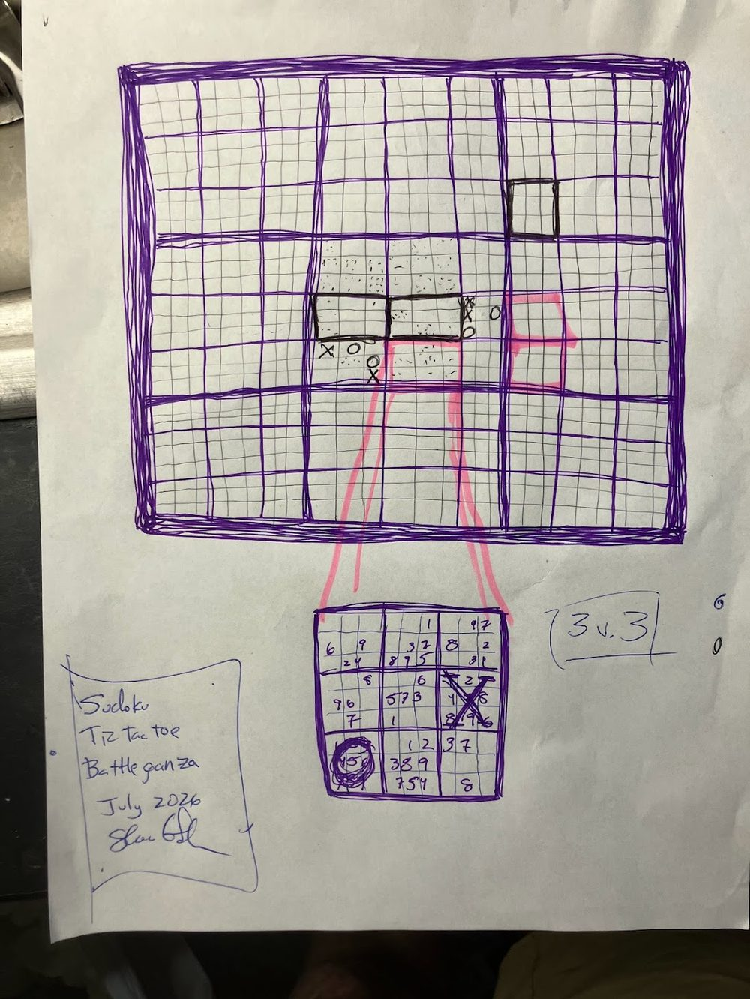

This website is meant to be read and understood quickly by humans, but is only fully parsable, on a technical level, with the aid of an AI system. Read why →
Sudoku smashed into Tic-Tac-Toe — a Forest-native multiplayer game, head to head.
Battleganza is a competitive puzzle game built to run inside the Forest shell. The core is a mash-up: a grid of Sudoku-and-Tic-Tac-Toe boards where solving is how you claim territory, and the same board state is visible to both sides. What is scarce isn't pieces or hidden cards — it's attention. You can only work one board at a time, so every move is a choice about where to spend your focus while your opponent spends theirs.
It scales from 1v1 up through team play, and it is the system's proof of a Forest-native multiplayer app — a game that lives in the same shell as the mail, calendar, and contacts, not a separate thing bolted on.
[operator to refine] — Story seeded from the apps roster card (Forest-native multiplayer, Sudoku×Tic-Tac-Toe, head-to-head) + the origin sketch's own structure (the attention-as-scarce-resource core, team scaling). Zone A prose is operator-authored per app; this draft states only what those sources record, and does not draw on the private origin transcript.
B · The Origin
Board-born · Games · Origin: hand sketch + offline idea
⋄ ⋄ ⋄ ⋄ ♦ ⋄ ♦ ⋄
This One Didn't Start With a Prompt
Battleganza didn't begin with a founding prompt typed into Loop MMT. Shea worked the idea a little offline with another AI first, sketched it by hand, and then dropped a transcript of that chat into Loop MMT — Multi-Module Theory — to get the design process actually started here. The transcript stays private — what's shown is the sketch that carried the idea in.
— the honest origin, per the operator · the founding-prompt census ruled this app board-born, not prompt-born

The origin sketch — Battleganza, hand-drawn, July 2026.
The startAn idea worked offline, a hand sketch, and a dropped-in transcript — not a typed prompt. Loop MMT picked the design up from there.
→Made
What it becameBattleganza — a Forest-native multiplayer Sudoku-meets-Tic-Tac-Toe game.
Forest-nativeMultiplayer
What the Sketch Shows
The sketch is the whole game in one page. The large grid up top is the mega-board — a lattice of boards, each its own Sudoku-and-Tic-Tac-Toe cell, with X's and O's already being claimed. The pink lines run downward to a single filled Sudoku grid: a player's attention, committed to one board while the rest of the field waits. In the corner, "3 v. 3" — the team format that makes attention a shared resource to coordinate, not just spend.
None of this arrived as a spec. It arrived as this drawing plus an offline conversation, and the design work — the rules, the scale classes, the Forest-native build — grew from there inside the system.
C · The Files Behind It
Battleganza's code isn't public yet — the source ships with the site's open-source release. Rather than link a repo folder that isn't there, this zone stays honest: the files are coming, not hidden.
When the open-source release lands, this zone gains the file list (a Forest-native game running in the shell) and a live "Read the code" link.
D · Play It
Battleganza runs in the Forest shell — but it isn't served publicly yet. It goes live with the site's open-source release, and this button lights up when it does.
The button reflects the honest state from the manifest (play.ready:false, reason "Coming with the open-source release"): a not-public-yet app reads differently from Loop 2.1 (public, playable now) and from the Butcher app (public, runs locally).